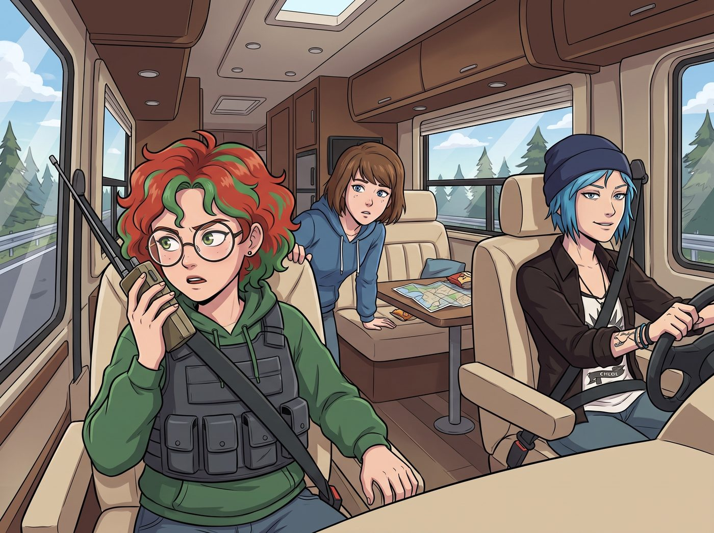

往返賭城

這趟從華盛頓州奧林匹亞半島到內華達州拉斯維加斯的往返旅程，完美地詮釋了什麼叫作「理想很豐滿，現實很骨感」。
一、去程：從浪漫公路到合規演習
Chloe 原本提出了極具浪漫色彩的「終極西海岸公路旅行」方案，但這個提案在執行階段迅速夭折——Victoria 堅決拒絕坐 Chloe 那輛沒有避震器的破皮卡顛簸二十個小時，於是刷黑卡租了一輛豪華大型房車。
真正讓這趟旅程徹底變調的，是坐上副駕駛「領航員」位置的 Lily。
她不知從哪裡翻出了一件深灰色的戰術背心，領口和肩部還縫著幾塊硬挺的模擬插板，整個人看起來活像是要去執行武裝押運任務，而不是去度假。腰間掛著一個老式的對講機，天線比她的頭還高出一截。
「Lily……妳這身裝扮是怎麼回事？」Max 從後座探出頭，一臉困惑。
「這是標準的長途物流護送規範裝備，Max 學姐。」Lily 一本正經地調整了一下插板的角度，接著「唰」地一聲拉開對講機的天線，按下通話鍵，用一種完全不像十九歲女孩的沉穩語氣開口：「這裡是黃銅一號，呼叫共享車隊調度總台，請回報 84 號公路奧林匹亞至波特蘭段當前路況與測速陷阱位置，完畢。」
對講機那頭傳來一陣雜訊，隨後是一個略帶疲憊卻十分配合的司機聲音：「黃銅一號收到，84 號公路南段目前暢通，波特蘭出口前方三英里有州警測速點，建議提前減速，完畢。」
「收到，感謝支援，黃銅一號完畢。」
車廂裡陷入了短暫的死寂。
「妳……妳跟計程車調度台連上頻道了？」Chloe 一臉見鬼地看著她，手裡的方向盤都快握不穩了。
「共享車隊的司機們常年在路上跑，他們的路況情報比任何導航軟體都即時、精準。」Lily 一邊說著，一邊像個真正的護衛隊長一樣，居高臨下地看著儀表板，「這是我半年前就談妥的互助情報網路，完全合法，純粹基於社群互惠原則。」
接下來的二十個小時，浪漫的公路旅行徹底變成了一場「高壓物流合規測試」。嚴格限速、強制休息站伸展、疲勞駕駛條例逐條宣讀，Lily 甚至每隔一段時間就會透過對講機跟遠方素未謀面的司機們互道平安，硬生生把二十小時的狂野公路夢，磨成了一場絕對安全、絕對合法、絕對無聊的長途押運。
二、换手
開了將近八個小時後，Lily 注意到 Chloe 的眼皮開始不受控制地打架，握著方向盤的手也偶爾會不自覺地鬆懈。
「Price 學姐，」Lily 放下對講機，語氣裡難得帶上了一絲不屬於行政報告的關切，「根據疲勞駕駛條例，連續駕駛超過八小時的司機，反應時間會下降約百分之三十。請靠邊停車，接下來這一段換我來開。」
「妳？」Chloe 挑起一邊眉毛，「妳有駕照嗎？」
「當然，而且我的路考成績是滿分。」Lily 一本正經地回答。
半信半疑的 Chloe 把車靠邊停下，跟 Lily 換了位置。結果接下來的三個小時，讓車廂裡的所有人都大開眼界。
Lily 的駕駛技術好得出乎意料——加速與減速的過程平順得幾乎感覺不到任何頓挫，過彎時的重心轉移精準得像是用尺量過，就連在一處狹窄的休息站倒車入庫，她也只憑著後視鏡一次到位，完全沒有多次修正。
「這……這也太穩了吧？」Chloe 坐在副駕駛座上，一臉難以置信，「妳這技術跟老娘有得拚啊！那妳剛才幹嘛還一直雙手死死握著方向盤，跟個新手一樣？」
「因為駕駛規範建議雙手保持在時鐘九點與三點方向，」Lily 頭也不轉，眼睛始終盯著前方路況，語氣理所當然，「這是最能保證緊急狀況下反應速度的握法。我完全有能力單手操控，但既然規範上是這樣寫的，遵守規範本來就是基本素養，沒有理由不這麼做。」
Max 在後座忍不住笑出聲：「所以妳雙手握方向盤，不是因為技術不夠，純粹是因為……合規？」
「沒錯，Max 學姐。」Lily 微微一笑，語氣裡帶著一絲罕見的驕傲，「安全和效率從來不是互斥的，只要嚴格遵守規範，兩者可以同時達到最優解。」
Chloe 靠在椅背上，看著眼前這個開車比自己還穩的實習生，一時間不知道該吐槽什麼，只能悻悻地嘟囔：「合著老娘引以為傲的野路子技術，在妳這種按規矩來的傢伙面前，好像也沒什麼好囂張的了。」
「這不是野路子技術有沒有問題，Price 學姐，」Lily 溫柔地糾正她，「只是規範本身，恰好就是最優解而已。」
三、黄铜二号
換到副駕駛座後閒得發慌的 Chloe，很快就把目光鎖定在了 Lily 隨手放在中控台上的對講機。
「喂，這玩意兒借老娘玩玩。」她也不等 Lily 答應，一把抄起對講機，煞有介事地按下通話鍵，模仿著剛才聽到的腔調清了清嗓子，「呃……這裡是……黃銅二號！呼叫黃銅一號的兄弟們，老娘現在在副駕駛座上，路上有什麼好玩的八卦嗎，完畢！」
對講機那頭沉默了兩秒，隨即傳來一陣善意的哄笑聲，一個粗獷的男聲率先回應：「哈！黃銅二號？黃銅一號今天還帶了個新兵？歡迎歡迎！我是老鷹七號，跑這條線都快十年了，說吧小妹妹，想聊點什麼？」
Chloe 瞬間來了精神，整個人往前湊，跟司機大哥們天南地北地吹起了牛——從哪個休息站的漢堡最厚實、到最近哪段路又在修路繞道，甚至還跟一個自稱「胡桃木三號」的女司機比拚起了誰換輪胎換得快，聊得不亦樂乎，把後座 Max 和 Victoria 都逗得直笑。
「妳這丫頭挺會聊嘛，」老鷹七號在電台裡爽朗地笑道，「比妳們家黃銅一號活潑多了，那小姑娘每次都是公事公辦，一板一眼的。」
「那是因為她是專業的，」Chloe 得意洋洋地瞥了一眼旁邊正專注開車的 Lily，「老娘才是負責活絡氣氛的公關部門！」
Lily 沒有說話，只是嘴角微微一動，顯然覺得這個「黃銅二號」的頭銜聽起來還挺順耳。
「這不是浪漫的公路旅行，」Chloe 事後回想起來依然心有餘悸，「這是被一個穿著防彈背心的十九歲押運官，用計程車電台押送去自首。」
四、回程：資本主義的終極妥協
在經歷了拉斯維加斯幾天的藝術放風和賭場驚魂後，所有人都累壞了。當大家想到還要再經歷一次二十小時的「合規限速與強制伸展體操」，所有人的腿都軟了。
「我們必須開回去，」Lily 站在車門前盡職匯報，「異地還車會產生高達 3500 美金的單程調度費，從財務效能的角度來看……」
「閉嘴！」
Victoria 爆發了。她猛地掏出黑卡撥通了租車公司的電話：「那輛房車我不還了，違約金全部從我帳戶扣！現在立刻派人來把它開走！」掛斷電話後，她轉頭高傲地揚起下巴：「我寧願把錢丟進大峽谷，也不要再坐著那台行動監獄回去！我剛才已經包下了一架灣流 G650 私人飛機！」
「Victoria，妳是我的神……」Chloe 激動得差點跪下來親吻名媛的高跟鞋。
五、三萬英尺的奢侈與寧靜
私人飛機在三萬英尺的高空平穩飛行。沒有顛簸，沒有限速，也沒有警察。
Chloe 在吧台前瘋狂地調製著免費的雞尾酒；Max 戴著眼罩，縮在寬敞的航空座椅裡享受深度睡眠；Kate 溫柔地翻閱著拉斯維加斯買回來的風景畫冊；Victoria 則敷著頂級保濕面膜，喝著香檳，感受著用錢買回來的尊嚴。
而在飛機最後排的小桌板前，Lily 依然穿著整潔的衣服，正在筆記本電腦上飛快地打字。
「Lily，妳又在搞什麼黑魔法？」Victoria 敷著面膜慵懶地問。
「沒有，Victoria 學姐，私人航空的服務非常完美。」Lily 推了推眼鏡，露出純潔的笑容，「我只是在計算我們這次包機所產生的碳排放量，並準備向聯邦稅務局提交一份環境補償抵稅申請。雖然我們花了包機的錢，但我們必須在年度稅務報表上，把它變成一筆合法的綠色投資。」
飛機艙裡陷入了短暫的安靜。Chloe 默默地灌了一大口雞尾酒，Max 把眼罩往下拉得更緊，Victoria 則決定徹底放棄思考。
只有 Kate 放下手裡的畫冊，笑瞇瞇地起身走到 Lily 身邊，輕輕拍了拍她的肩膀：「Lily 真的把每一件事都想得好周到呢，連玩樂都不忘記為地球盡一份力，這才是真正的環保精神呀。」
「謝謝誇獎，Kate 學姐。」Lily 難得露出了一絲被真心誇獎的靦腆。